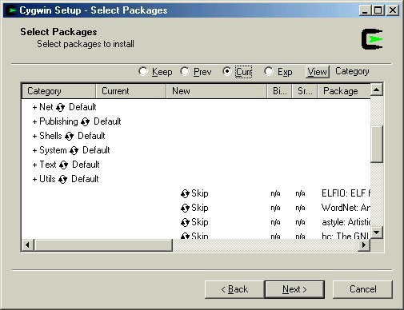
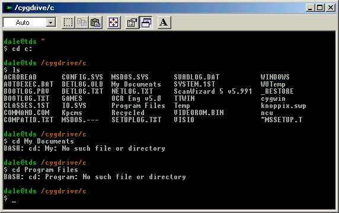

Transporting Files between Linux and Windows
By Dale Raby
A long time ago in a galaxy far... no that isn't quite right. Well, it was a while ago, 1999 or so, as I recall. In any case, it was at that particular Barbourian Now when I finally decided to jump into "modern" times and abandon my old Tandy 600 laptop for something that could actually "surf the web", as it was known back in those innocent times. So I went out and bought a used machine running Windows 95.
Having been rather flush with cash at the time, I also bought a Hewlett-Packard printer and an IBM parallel port scanner. Shortly after this, I discovered what a really rotten OS Windows of that era was. I think it was after the third or fourth time I had to take the machine in for yet another fifty dollar repair that I began to search for alternatives and discovered Linux. It was a boxed copy of Mandrake 6.5... which was even packaged with a ready-made boot disc.
Unfortunately, Linux did not support my scanner... and it still doesn't. I did without it for a time, but eventually I got another Windows machine up and limping just so I could have scanner capability. Transferring image files to the Linux machine was a laborious process involving copying to an Iomega Zip disk and then re-copying them to the Linux machine's hard drive, or emailing them to myself from the Windows machine and receiving them on the Linux machine. This was also a laborious task... especially with the 28.8 modems I was using at the time.
Eventually, I set up a LAN... which was a terrifying prospect at first that I put off for several years until I finally broke down. I had since acquired a Sony Mavica camera, which was also not supported under Linux, though I had a workaround in the floppy discs the Mavica could use. It was much easier and faster to transfer the images from the Sony Memory Stick to the Windows machine, however.
The LAN made it possible to transfer files, from one computer to the other, though it was by no means easy. I don't care what anyone says; SAMBA IS NOT simple to set up! By this time, I had pretty much abandoned Windows for all uses except supporting my legacy scanner and camera, and was getting to be fairly comfortable with command lines in a Bash shell and the use of common Linux applications like the GIMP.

I still had no easy way to get the files to my Linux machine, even though there was no theoretical hardware limitation. I am many things, but I am not by any stretch an IT professional. I was however, blessed with a web-buddy of genius level IQ; one Mae Ling Mak, formerly of the late Maximum Linux magazine. She dropped a few terms I had never heard before; 'scp' and 'Cygwin'. Now, it being too embarrassing for a studly alpha male type such as myself to actually admit to an attractive young woman that I didn't know what those terms meant, I went Googling. I find that I often do quite a bit of Googling whenever I receive an email from Mae Ling Mak.
OK - Cygwin is, for all practical purposes, a Windows application that gives you a Bash shell. Within this shell, one can run many common Linux/Unix applications on top of the Windows OS. When it is installed, one makes the choices of which applications one needs. If you want Mutt and GnuPG, for example, you simply check those boxes during the setup process, and they are installed for you.
'scp' is the "secure copy protocol". It allows one to transfer files from one location to another within the LAN or even to a server on the Internet. Using the '-r' option, one can transfer entire directories intact with all their embedded children. One of the nice things about 'scp' is that anything sent this way is automatically encrypted so that nobody can read what is sent. Read between the lines here.

Now, using 'scp' from a Cygwin Bash shell will allow one to transfer files from the Windows machine with obsolete non-Linux supported hardware to the Linux machine using a command line.
Two problems then manifested themselves; I was not familiar enough with the 'scp' command to remember the procedure from one week to the next, and the Windows directory hierarchy is complex and confusing to anyone used to Unix/Linux. Also, as noted in the illustration, one cannot navigate double-named directories with Bash, so my default Windows ME directories My Pictures, My Documents, and Program Files, are still unreachable with Cygwin.
[ In fact, they are indeed reachable - but, just like filenames that contain whitespace in *nix, they require a bit of twiddling. Namely, surrounding the file or directory name with quotes - i.e. cd "My Pictures", etc. Conversely, you could use wildcards: ls *Pictures or even ls My*Pictures should work fine. -- Ben ]
By doing a little Googling, I got the proper command sequence ironed out. Then Mae Ling jumped into my head from a few years back when she wrote an article about scripts. After a little consideration, I created a text file containing the command sequence to transfer my files to the host computer called "beam".
The simplest way to do this is to invoke 'vi', as "vi beam", and paste the text below into it, suitably modified to suit your own system. You will need to substitute your own username on the Linux system, and you may be able to use the domain name of the host computer, rather than the IP address I used, depending on how you have your LAN set up. The '-r' option recursively copies the entire specified directory and its contents - in this case, that's "/home/dale/transporter" - to the host computer. The comments are, of course, optional.
# this is an scp command file. To use it, transfer files to the # "transporter" directory and then invoke the command line # below or simply type "./beam" in a Cygwin bash shell. scp -r transporter dale@192.168.1.12:/home/dale
Next, I created a new directory, thusly: "mkdir
transporter". Now I had a command file to "remember" the command
sequence for me, as well as a place to store documents I wished transported
to the host computer (the "transporter" directory). This directory can be
accessed using the Windows GUI, which sidesteps the double name problem.
By simply typing in "./beam", one can initiate transport.
When you do this, you will be prompted for the password you set up on the
Linux machine and after entering it, the directory "transporter" magically
appears in your home directory on the host machine. Upon browsing it, you
will find all your files intact.
No fuss, no muss. Now you can open all those .bmp images with the GIMP and alter them to your heart's content.
For proper housekeeping, one must clear the transporter platform after every use... on both ends! If you do not do this, you may have to dig through a pile of tribbles to find what you just transported. Note also, that any file of the same name will be overwritten by the subsequent version of it. I usually access the files as transported and after modifying them, use the "save as" option from the file menu of most Linux applications to put them in different directories.
[ This kind of problem in *nix is traditionally handled by creating a new, time-stamped directory at the "receiver" end during each upload. This avoids conflict with existing files, but requires occasional cleanup to conserve disk space. -- Ben ]
Then I do a "./jayne":
#this script sends Jayne and Vera to "clear" the transporter platform. rm -rf transporter

You can use the 'jayne' command file only with caution, like Adam Baldwin's character. 'jayne' is dangerous and will not care if you forgot to move the files off the transporter platform... he will simply kill them all and give them to the Reavers. You will not be able to recover them. If you want to watch Jayne and Vera do their evil work, you can use the '-v' option, and then you will see a listing as Jayne makes each kill.
The 'jayne' command should not be used on the Cygwin end of things, as it deletes the "transporter" directory. If you want to run a 'jayne' command on both ends, you have to remember to "mkdir transporter" before you can use the transporter again.
If you want to, I suppose you could make another command file and call it either "scotty", or "kaylee", depending upon whether you are a member of Star Fleet or the Browncoats. Scripts do indeed invoke a certain amount of Serenity.
Dale A. Raby is an ornery old man who started out on the original IBM PC back
in the day of running MS-DOS programs while convalescing in Ireland Army
Community Hospital and working for Captain James. Upon release from that
particular episode of his military service, he bought a Tandy 600 laptop
which still works after a fashion.
He picked up a more "modern" computer in 1998 and began publishing a general
interest webzine, The Green Bay Web. Quickly discovering that Wind0ws 95 was
about as reliable as a drunken driver with sleep deprivation, he made the
conversion to Linux over the protestations of every member of his household. He
now uses Fedora Core and since discovering Yum, has managed to keep his systems
relatively up to date.
Dale is a graduate of the University of Wisconsin-Green Bay with a background
in photography and print journalism. He is also a shade tree blacksmith who can
often be seen beating red-hot iron into shape in his driveway. He has been
known to use hammers and other Big Tools to "repair" uncooperative computers.
He is a conservative WASP, abhors political correctness, and... not to be too
cliché... enjoys hunting and shooting. Yes, that is a shotgun. No,
it is not a rifle. Yes, there is a difference.
![[BIO]](../gx/authors/raby.jpg)